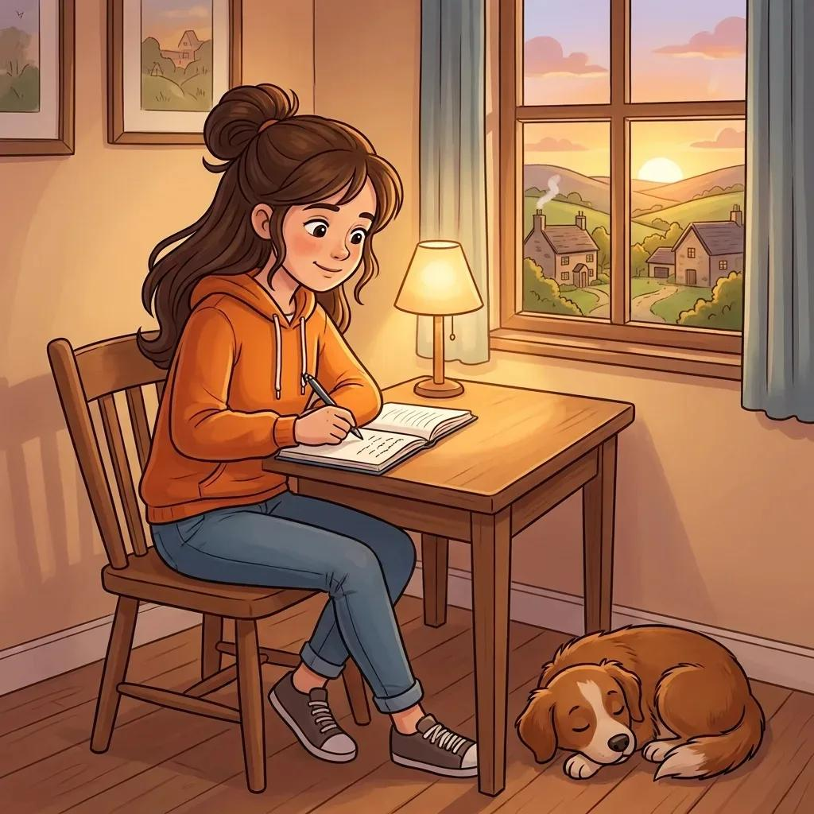
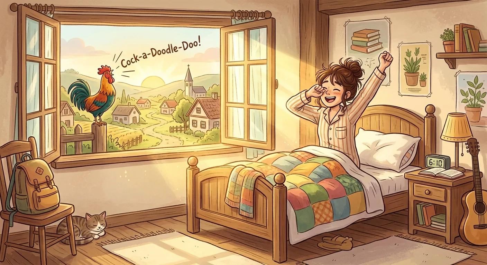
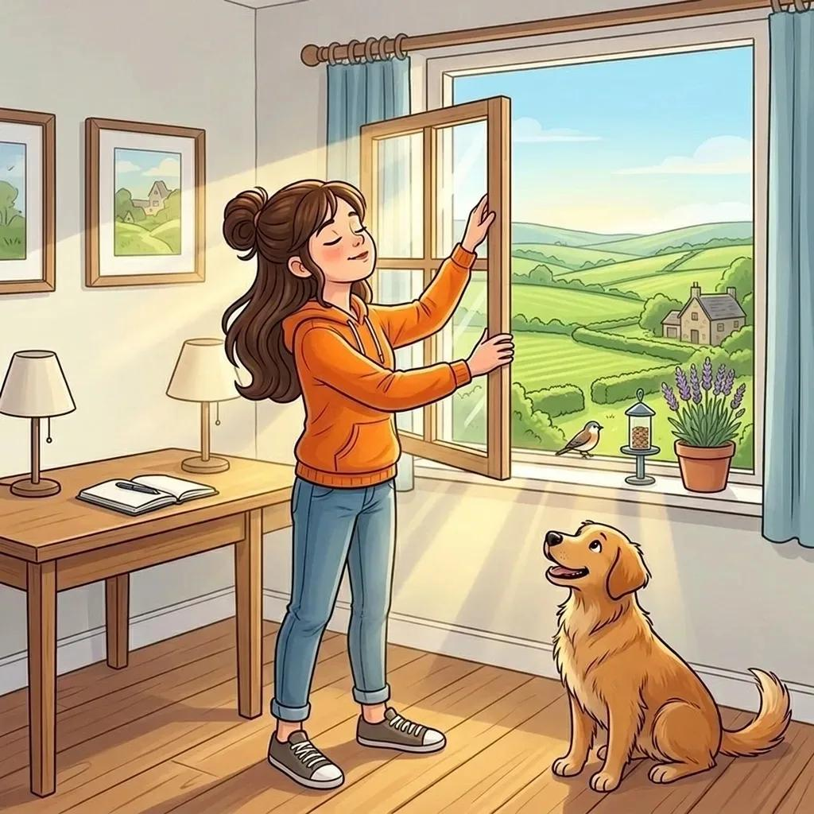
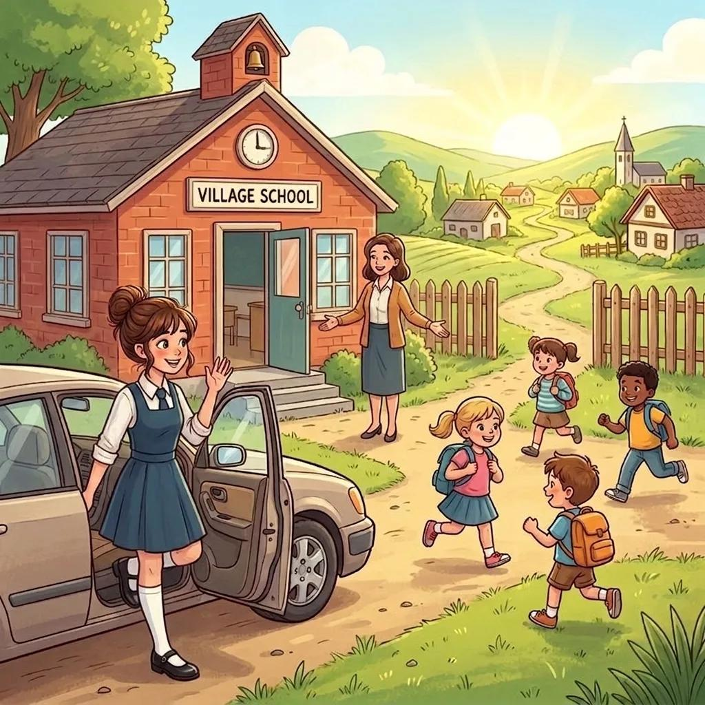
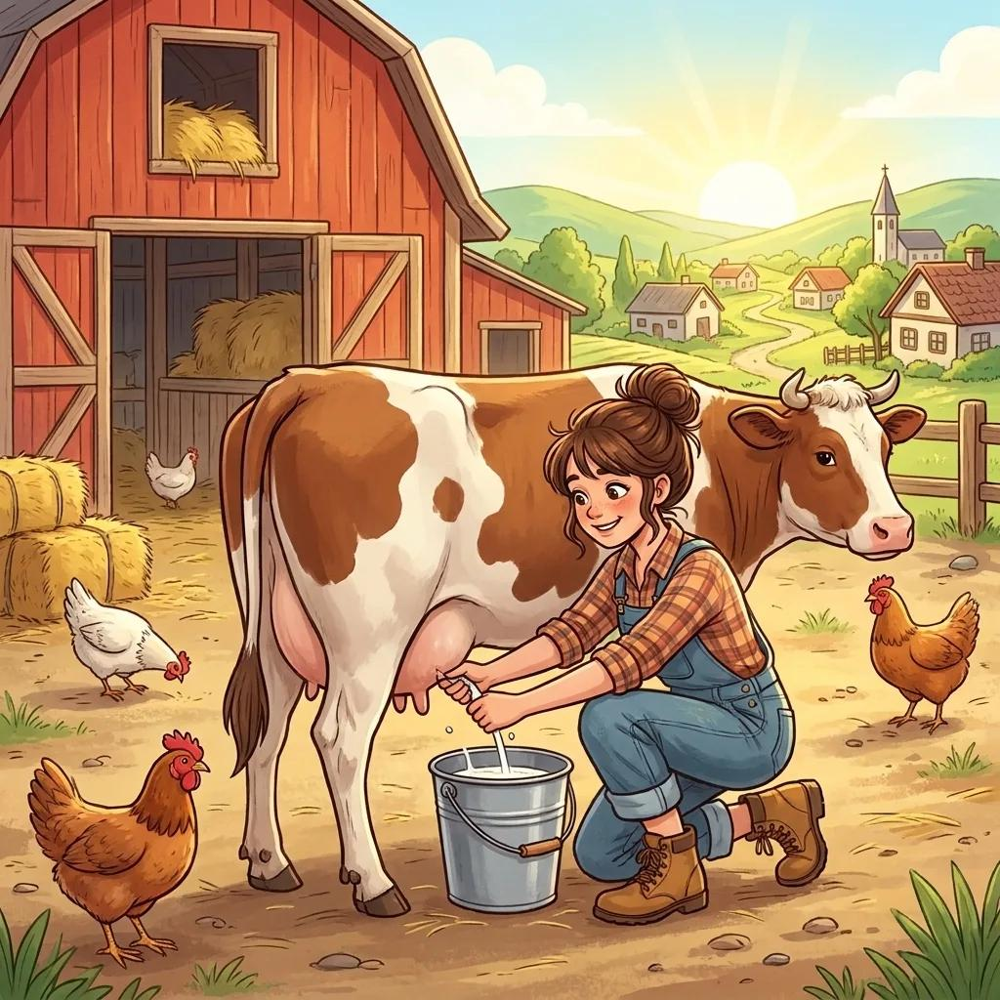
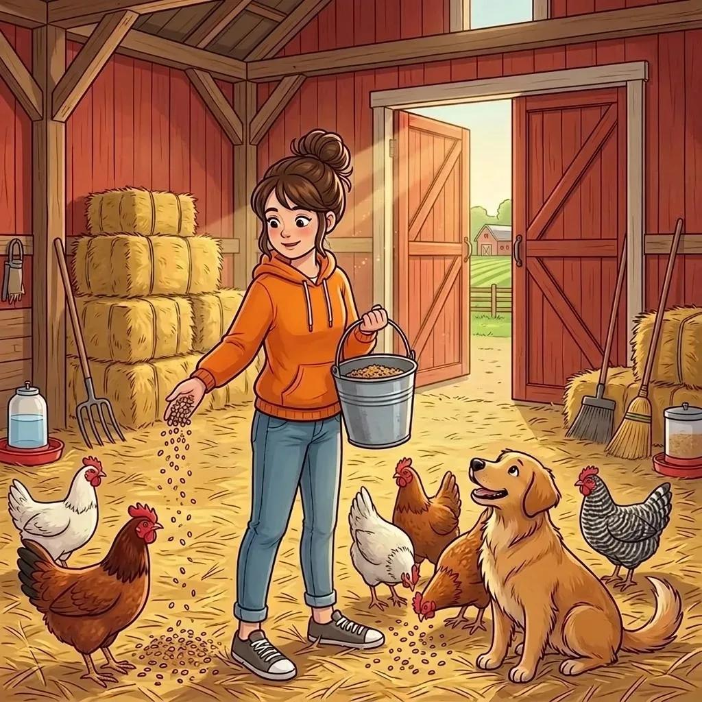
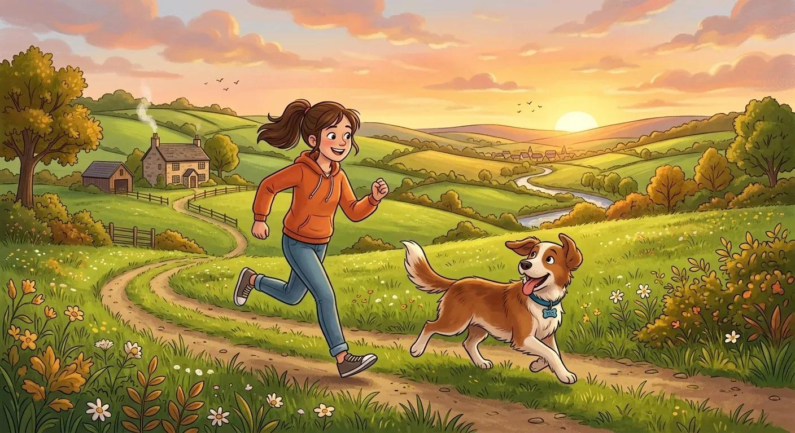
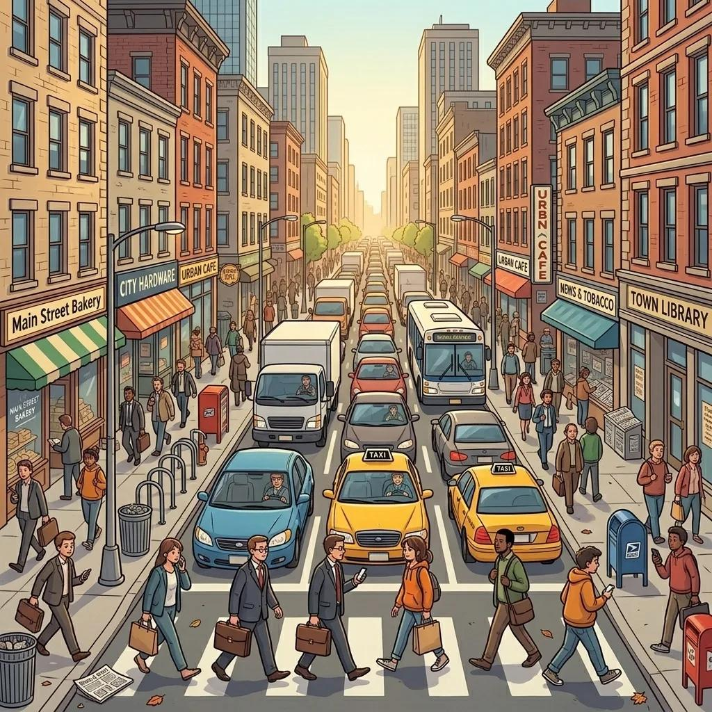

Hi! My name is Anna. I live in a small village with my family. Let me tell you about my life here. It's very different from the city!

Right now, I am sitting in my room and I am writing this story for you. Outside, the sun is setting, and the village is going to sleep. It's my favourite time of the day — everything is quiet and peaceful. I can hear the birds singing their last songs. At the moment, my dog Rex is sleeping on the floor next to me. He looks so happy!
Now let me tell you about my usual day.

Morning. Every day I get up early, at 6 o'clock in the morning.

I open the window and breathe in the fresh air. It's so clean here, not like in the city where there is pollution and heavy traffic.

After breakfast, my mum takes me to school by car. The school is in the next village, 5 kilometres away. There are only 20 children in my school. It's very small, but I like it.

Afternoon — Farm Work. In the afternoon, I come back home from school and help my parents on the farm. We have cows and chickens. First, I go to the farmyard and help my dad milk the cows.

Then I go to the barn to feed the chickens. It's hard work, and sometimes I can't stand the smell, but I love our animals.

Evening. After the farm work, I have dinner with my family. There aren't many children in my village, so sometimes I feel isolated and lonely. But I have Rex! We play together in the fields every evening. He is my best friend.

Weekend. At the weekend, I sometimes go to the town with my parents. My dad drives our old car. The town is always crowded and noisy. There is so much hustle and bustle! I don't like it there. I prefer the peace and quiet of the countryside.
So this is my life. The fresh air, the green fields, the beautiful sunsets, and my dog Rex. I'm happy here. What about you? Do you live in a city or a village?
1. Name / where she lives
2. What is she doing right now? (sitting, writing, sun setting, Rex sleeping)
3. What does she do every morning? (get up, fresh air, school)
4. What does she do after school? (farmyard, milk cows, barn, feed chickens)
5. Why does she feel isolated? (not many children)
6. Who is her best friend? (Rex, play in the fields)
7. Why doesn't she like the town? (crowded, noisy, hustle and bustle, prefers countryside)
1. Name / where she lives
2. What is she doing right now?
3. What does she do every morning?
4. What does she do after school?
5. Why does she feel isolated?
6. Who is her best friend?
7. Why doesn't she like the town?
Anna · village · sitting · writing · sun setting · Rex sleeping · get up early · fresh air · school · farmyard · milk cows · barn · feed chickens · isolated · Rex · fields · town · crowded · noisy · hustle and bustle · peace and quiet
🗣️ Retell the text orally! Teacher checks.